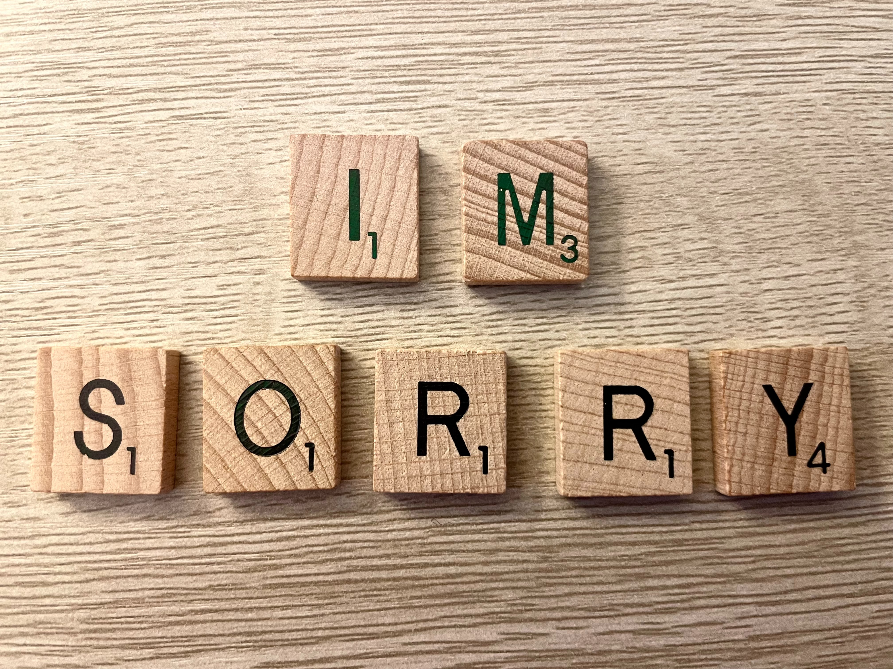

Are Books Trendy Again? The Good (and Bad) Side of Booktok
What could go wrong when Tiktok's new community mixes millions of book lovers that hold so much influence over the literary world together? Before diving into this internet sensation, know the good, the bad, and the dirty of these book fanatics.
A Dissection of the Digital Apology
A group of students break apart apologies from celebrities and online personalities to see what makes a good apology.
Struggling to Make Food in College? Watch This!
I'm a college student passing down one of my favorite "struggle meals" to other students who might find it hard to make food without breaking the bank. Here's how to make Dino Nugget Chicken Parm for only 11 dollars!

Other Resources
When researching topics to include in my podcast, it really helped to find another blog post that narrowed down their picks for worst Youtube apologies!.